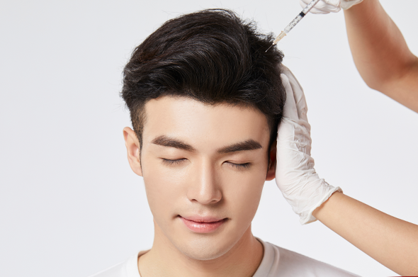

健康で豊かな毛髪のための
韓方脱毛治療とは ?

01
脱毛の原因
- 1. 血が豊富なら髪の毛が健康で、血が足りなくなると髪の毛も弱くなります。
- 2. 肺が皮膚と毛を司ります。
- 3. 腎が衰えると髪の毛も弱くなります。
- 4. 怒りの感情が生じると胆に損傷を与えて髪の毛が薄くなります。
- 5. 現代医学的では神経機能失調、内分泌障害、感染性疾患などの原因もあります。
02
脱毛の
韓方薬処方
-
1.
精血不足で頭皮に栄養不足状態になった場合、補腎・補精・補血し、
頭皮に栄養を供給します。 -
2. 油っこいお食べ物で頭皮に炎症やふけが多くなると痒くて
脱毛になった場合、「湿熱」を除去します。 -
3. 過剰な精神的な緊張や刺激によって脱毛になった場合、
停滞になった気の流れを良くして「熱」を取り除きます。